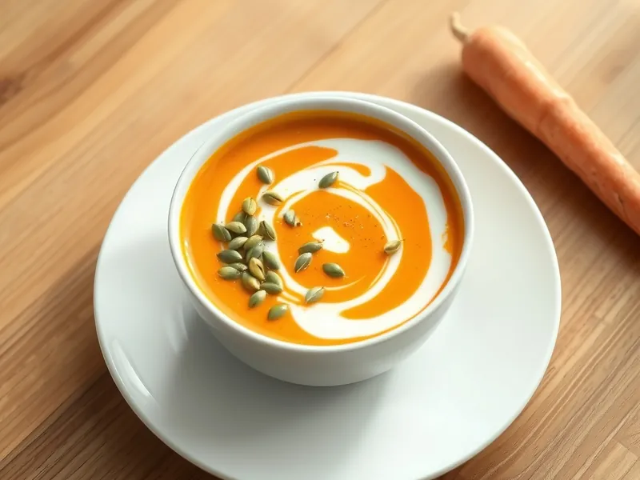

Фото: Иллюстрация ИИ, Cloudflare Workers AI
Морковный суп-пюре с имбирём
Постный оранжевый суп из моркови с имбирём и кокосовым молоком
30 мин4 порц.211 ккал на порциюБ 3 · Ж 16 · У 15Интернациональная кухня
Продукты на 4 порц.
- Морковь6,5 шт
- Лук репчатый1 шт
- Имбирь20 г
- Чеснок1 зуб.
- Растительное масло1 ст. л.
- Вода800 мл
- Кокосовое молоко200 мл
- Соль1 ч. л.
- Карри (приправа) по желанию1 ч. л.
- Тыквенные семечки по желаниюпо вкусу
Как готовить
- Очистите морковь и нарежьте тонкими кружками 3-4 мм, чтобы она быстро сварилась. Нарежьте лук, натрите имбирь и чеснок.
- Обжарьте лук в масле на среднем огне 4 минуты, добавьте имбирь, чеснок и карри, жарьте 1 минуту до аромата.
- Положите морковь, влейте воду, посолите. Варите под крышкой на среднем огне 15 минут, пока морковь не будет легко разминаться ложкой.
- Пробейте суп блендером, влейте кокосовое молоко и прогрейте 2 минуты на слабом огне.
- Разлейте по тарелкам и посыпьте тыквенными семечками.
Совет. Чем тоньше нарезана морковь, тем быстрее суп. Кокосовое молоко можно заменить сливками, тогда суп будет уже не постным.